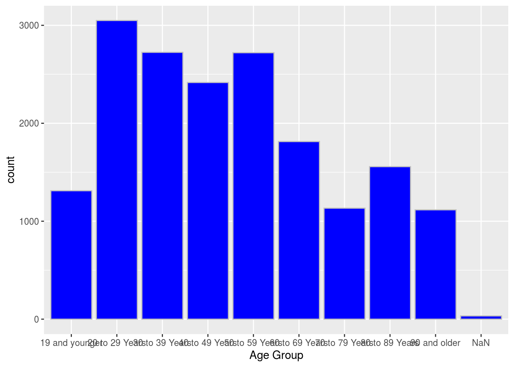
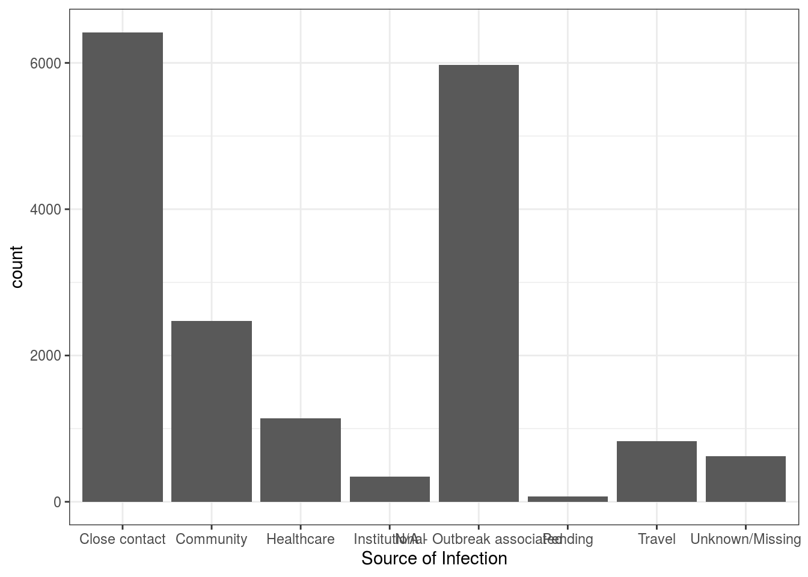
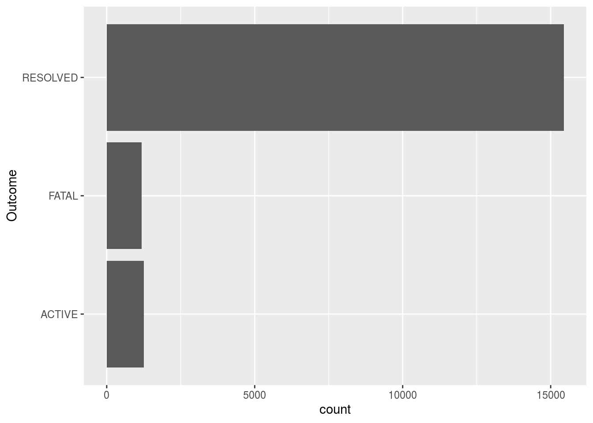

Part I. Abstraction
Through analyze the information of cases of COVID-19 in Toronto, we gain better understanding of the virus and the safety precautions we can make. We used (Gelfand 2020; Wickham et al. 2019), both codes and their descriptions.
Introduction
The global pandemic of COVID-19 has caused endless problems to our lives, since the beginning of 2020. In the mean time of fighting against the disease, Toronto Public Health has collected detailed information about every reported or probable case. Analysis of these data might give us an idea of questions such as whether the virus attacks every person indifferently or it might target a certain group of people, and might enlighten us what proper precautions we can make to protect ourselves.
Data Introduction
This dataset include all reported or probable cases of COVID-19 recorded by Toronto Public Health, since January 2020. It displays demographic, geographic, and severity information of every case. Firstly, let us give a glimpse at the dataset:
## Rows: 17,872
## Columns: 18
## $ `_id` <int> 143647, 143648, 143649, 143650, 143651, 1436…
## $ Assigned_ID <int> 1, 2, 3, 4, 5, 6, 7, 8, 9, 10, 11, 12, 13, 1…
## $ `Outbreak Associated` <chr> "Sporadic", "Sporadic", "Sporadic", "Sporadi…
## $ `Age Group` <chr> "50 to 59 Years", "50 to 59 Years", "20 to 2…
## $ `Neighbourhood Name` <chr> "Willowdale East", "Willowdale East", "Parkw…
## $ FSA <chr> "M2N", "M2N", "M3A", "M4W", "M4W", "M2R", "M…
## $ `Source of Infection` <chr> "Travel", "Travel", "Travel", "Travel", "Tra…
## $ Classification <chr> "CONFIRMED", "CONFIRMED", "CONFIRMED", "CONF…
## $ `Episode Date` <chr> "2020-01-22", "2020-01-21", "2020-02-05", "2…
## $ `Reported Date` <chr> "2020-01-23", "2020-01-23", "2020-02-21", "2…
## $ `Client Gender` <chr> "FEMALE", "MALE", "FEMALE", "FEMALE", "MALE"…
## $ Outcome <chr> "RESOLVED", "RESOLVED", "RESOLVED", "RESOLVE…
## $ `Currently Hospitalized` <chr> "No", "No", "No", "No", "No", "No", "No", "N…
## $ `Currently in ICU` <chr> "No", "No", "No", "No", "No", "No", "No", "N…
## $ `Currently Intubated` <chr> "No", "No", "No", "No", "No", "No", "No", "N…
## $ `Ever Hospitalized` <chr> "No", "Yes", "No", "No", "No", "No", "No", "…
## $ `Ever in ICU` <chr> "No", "No", "No", "No", "No", "No", "No", "N…
## $ `Ever Intubated` <chr> "No", "No", "No", "No", "No", "No", "No", "N…There are 18 variables in total, despite "_id" and “Assigned_ID”, they represent:
*Outbreak Associated: Outbreak associated cases are associated with outbreaks of COVID-19 in Toronto congregate settings(such as health institutions or homeless shelter etc.).
*Age Group: Age groups (in years) the client is in: ≤19, 20-29, 30-39, 40-49, 50-59, 60-69, 70-79, 80-89, 90+, unknown (blank)
*Neighborhood Name: The neighbourhood the client lives in.
*FSA: Forward Sortation Area, first three letters of the postal code of the client.
*Source of Infection: The most probable way that a sporadic case might acquire the infection.
*Classification: Whether this case is confirmed or probable, according to standards.
*Episode Date: the estimated date of acquisition.
*Reported Date: the date the case is reported.
*Client Gender: gender of the client.
*Outcome: whether the case is resolved or in progress or fatal.
*Currently Hospitalized: whether the client is in hospital.
*Currently In ICU: whether the client is in ICU.
*Currently Intubated: whether the client is intubated.
*Ever Hospitalized: Has the client ever hospitalized.
*Ever in ICU: Has the client ever been in ICU.
*Ever Intubated: Has the client ever intubated.
Data Analysis
1.Age group
## Warning: Ignoring unknown parameters: binwidth, bins, pad
According to the plot we drawn according to data, which displays how many cases in each age group, the number of cases actually peaks at the 20-29 group, which seems to contradicts to the general opinion that more of elderly people are infected with COVID-19. In fact at all ages the number of case remains over 1000. The plot is right-skewd so the median be aroud 30s to 40s.
2.Source of Infection 
In the barplot we draw according to the source of infection, it is obvious that most clients acquired infection through close contact and outbreak association, which happens to prove the importance of social distancing.
3.Outcome 
It is clear that most of cases are resolved.
Discussion
In conclusion, the close contact between people and carriers of virus does lead to people’s probable acquisition of infection and is one of the most common reasons. And younger population should pay attention to self-protection during pandemic as people at all ages could be infected with similar probability. The analysis we made all used barplots and histogram, as we do not have a numerical variable here, we need to conduct deeper analysis. The data may constantly changing as the pandemic is mot over yet, but most importantly, everyone should take COVID-19 seriously.
Reference
Toronto Public Health, 2020. About COVID-19 Cases in Toronto https://open.toronto.ca/dataset/covid-19-cases-in-toronto/
Gelfand, Sharla. 2020. Opendatatoronto: Access the City of Toronto Open Data Portal.
Wickham, Hadley, Mara Averick, Jennifer Bryan, Winston Chang, Lucy D’Agostino McGowan, Romain François, Garrett Grolemund, et al. 2019. “Welcome to the tidyverse.” Journal of Open Source Software 4 (43): 1686. https://doi.org/10.21105/joss.01686.